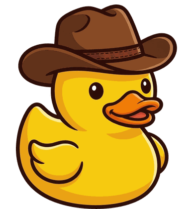
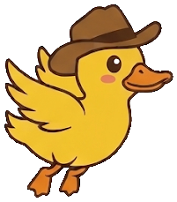
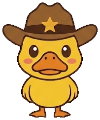

Sesión
#1
Tiempo
00:00
Vmax
0.00 mV
Saltos buenos
0
Puntaje
📡 Tu sensor
Buscando tu sensor...
—
Esperando a tu fisioterapeuta...


Tu fisioterapeuta va a calibrarte y darle inicio al juego.
💪 ¡Contrae al máximo!
Sostén la fuerza hasta que llegue a 0

Oro